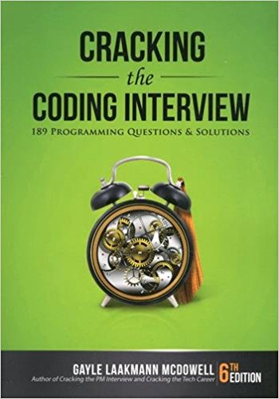
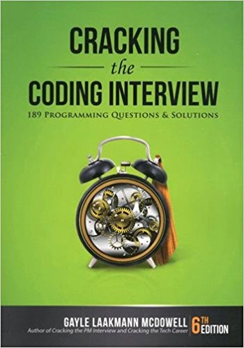

Giancarlo Barillas: Project 2
About Me:
My name is Giancarlo Barillas. I am a third-year Information Technology major with a minor in Applied Mathematics. I have a strong hunger for knowledge and am always looking to see what new programing language I can learn. I also like to innovate and create new projects for myself. I was born in Downers Grove Illinois and moved to Puerto Rico when I was young. I am bilingual and I love to be active. Tennis and Ping Pong are my two favorite sports but I am open to playing any sports. On my free time, I am usually reading up on programming languages. The language that I am most proficient in is Java. I also know C++, SQL, HTML, CSS, and Javascript.
Favorite Foods
- Lou malnati's Deep Dish Pizza
- Oyster
- Mofongo
- Tacos
- Ricobene's Breaded Steak Sandwich
Hobbies
- Coding Projects
- Reading
- Practicing Tennis
- Jogging Down Lakeview
- Solving Logic and Math based problems
Books I recommend to Everyone:

 
